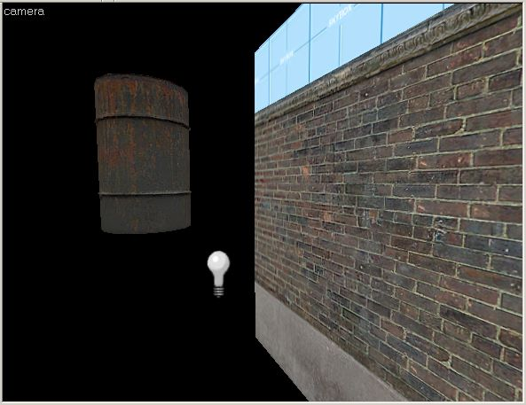
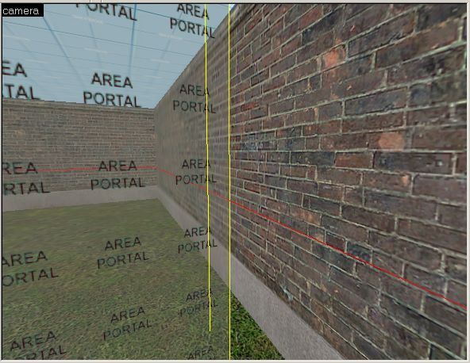
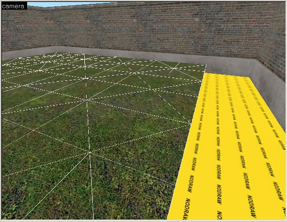
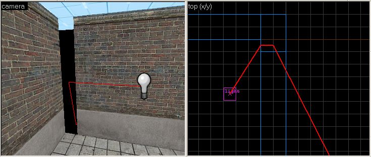

Leaks Explained
Levels created with the Source Engine must be completely internally sealed. No part of the interior of the level, the "world", must connect with the outside, the "void". When there is any kind of gap to the void, a leak is generated when the map is compiled by vbsp. When a leak occurs, the tools cannot know which part of the level is inside, and what part is outside, and vvis cannot be run.
This example shows a map with an obvious gap in the geometry, leading to the void. This will generate a leak error message when it is compiled:
|
When a map like this is compiled, with a gap to the void, vbsp generates an error similar to this:
ProcessBlock_Thread: 0...1...2...3...4...5...6...7...8...9...10 (0) **** leaked **** Entity light (-1607.69 -1094.12 -183.00) leaked!
With this error message, vbsp is telling you that there has been a leak in the level, and the first entity it found when attempting to get into the level from the void (in this case, a light entity). It also gives you the location of that entity, expressed in X, Y, and Z world unit coordinates.
Effects of Leaks
A leak in a level has a number of bad effects. First, the vbsp process will report the leak, and it will not produce a portal file (<mapname>.prt). The portal file is used by the vvis process to perform its visibility calculations. Since there is no portal file, vvis will not run at all. When vvis doesn't run, it doesn't produce the files necessary for the vrad process to calculate its light bounces. Due to this, the vrad process will only perform direct lighting - no light bounces.
The most serious effect by far is that the vvis process will not run when a leak is present. When the level is run in the game, the rendering engine will not have any visibility info available with which to limit itself, so it will attempt to draw the entire level. This will most certainly lead to high polygon counts and may lead to sections of the map to render incorrectly or not at all.
Other Causes of Leaks
Besides gaps in outside geometry, there are other map errors that can cause vbsp to generate a leak error. For any of these errors, see the following section for information on finding the source of the leak and fixing it.
One common mistake is the accidental placement of an entity outside the interior level space. This can happen if you place an entity outside in the void area while you're working on it, then forget to delete it when you're finished. This can also occur if you attempt to seal the map with an brush entity, such as a func_door. Since brush entities do not block visibility, this will create the same condition as if there were a gap in their place. All entities must be inside valid level space, or the map will generate a leak.
|  |
| Placing any entity in the void will cause a leak. |
Leak error messages can also be generated when an areaportal does not properly seal the two areas it connects. See the section on areaportals in the Performance and Visibility document for more information. Finding leaks with areaportals uses a similar method as geometry gap leaks.
|  |
| Areaportals that do not seal areas will cause leaks. |
One more cause of leaks is if you try to seal a map using other types of non-solid geometry, such as displacements (terrain), water, or func_detail brushes. None of these non-solid brush types will block visibility and seal the world. Attempting to use them in this way will generate a leak. You can fix this type of leak by adding a solid brush behind them to seal the map. Using a brush with the tools/toolsnodraw material will seal the map, but not add any additional rendering cost, so it's a great way to seal the map behind non-solid geometry.
|  |
| Seal areas behind non-solid geometry to prevent leaks. |
Finding Leaks
Sometimes these gaps aren't quite as obvious as the above example. They can be as little as one unit wide and still cause a leak. The compile tools provide you with a pointfile to help you locate the leak. A pointfile is a file generated by vbsp that draws a line between the void of the map to the entity it found during the leak check. After receiving a leak error in vbsp, a <mapname>.lin file will be created in the same directory as your .vmf map file.
Loading a Pointfile
The pointfile can be loaded into the Hammer Editor to show you precisely where the leak is inside the level. To load a pointfile for the level, use the Load Pointfile command in the Map menu.
Here is the pointfile loaded into the previous example. Notice that the red line appears in both the 3D and 2D views, and is traced back the the entity through the gap:
|  |
| The Load Pointfile command shows the path to the leak in the Hammer viewports. |
Using this visual aid, you can find the source of the leak by following the red line to the outside of the level. It's best to start at the entity specified in the vbsp error message, and then follow the line until you find the gap in the geometry. Close the gap and recompile the level to see if you have fixed the leak.
Finding the Endpoint
If you're having trouble locating the start entity, you can use the Go to Coordinates command on the View menu to find the entity and the start of the pointfile line. Simply enter the coordinates given by vbsp for the entity location, and the 2D and 3D views will be centered on that location. Follow the line to find your leak.
Another method to find the source of the leak is to zoom out in one or more of the 2D views. After loading the pointfile, zoom out until you see the red line. Follow the line until you reach the entity at the one of the endpoints. Then select the entity, and choose Center 3D Views on Selection from the View menu. Now you can follow the pointfile line to find the leak.
Conclusion: An Ounce of Prevention
Using the pointfile tools makes finding leaks relatively painless, but one of the most important ways to fix leaks is by preventing them in the first place. Taking your time when building, and making sure brushes are snapped properly to the grid can go along way towards eliminating leaks before they occur. The cleaner and more organized you build your geometry, the more likely you are to be able to spot leaks when they occur, or even prevent them from happening in the first place. You can also help prevent lots of extra work by compiling your level as you go along, instead of building your whole level before trying to compile it. Finding one leak at a time, while the map is only partially complete, is a lot easier and faster than finding a lot of leaks in a complete map that is full of geometry.
© 2004 Valve Corporation. All rights reserved. Valve, the Valve logo, Half-Life, the Half-Life logo, the Lambda logo, Steam, the Steam logo, Team Fortress, the Team Fortress logo, Opposing Force, Day of Defeat, the Day of Defeat logo, Counter-Strike, the Counter-Strike logo, Source, the Source logo, Hammer and Counter-Strike: Condition Zero are trademarks and/or registered trademarks of Valve Corporation. Microsoft and Visual Studio are trademarks and/or registered trademarks of Microsoft Corporation. All other trademarks are property of their respective owners.